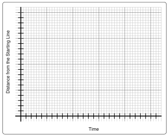
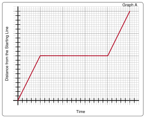
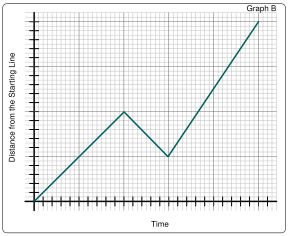
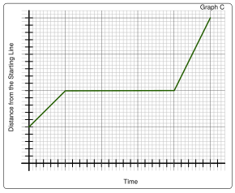
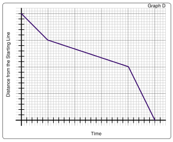

Example 20. The Hare and the Tortoise.
We continue our work with graphing by considering how we could represent the race between the hare and the tortoise graphically.
A hare one day ridiculed the short feet and slow pace of the tortoise. The latter, laughing, said, “Though you be swift as the wind, I will beat you in a race.” The hare, deeming her assertion to be simply impossible, assented to the proposal; and they agreed that the fox should choose the course, and fix the goal. On the day appointed for the race they started together. The tortoise never for a moment stopped, but went on with a slow but steady pace straight to the end of the course. The hare, trusting to his native swiftness, cared little about the race, and lying down by the wayside, fell fast asleep. At last waking up, and moving as fast as he could, he saw the tortoise had reached the goal, and was comfortably dozing after her fatigue.―Aesop (translated by George Fyler Townsend)
(a)
If we want to represent each animal’s distance from the starting line in terms of time to complete the race, where on the axes would it make sense to mark the starting line set by the fox?
(b)
Where on the axes would it make sense to mark the finish line set by the fox?
(c)
How should we represent the tortoise’s steady pace be represented? Why?
(d)
How should we represent the hare’s falling asleep be represented? Why?
(e)
On the coordinate grid below, draw a graph to illustrate the tortoise’s distance from the starting line over the time it took her to complete the race. On the same grid, draw a graph to illustrate the hare’s distance from the starting line over the time it took him to complete the race.

Blank grid for plotting.
(f)
Explain how you know each graph fits the story.
(g)
The four graphs below each show the hare’s movement in subsequent races. Study the graphs and answer the questions below.

Graph of the hare and tortoise

Graph of the hare and tortoise

Graph of the hare and tortoise

Graph of the hare and tortoise
Write a story to go with each race. Describe specifically how the hare is moving:
-
Where does the hare start the race? Finish the race?
-
At what time does the hare start the race? Finish the race?
-
How fast is the hare moving on each time interval compared to his speed on the other time intervals?
-
What direction is the hare moving?
-
How do the start and finish times and locations compare from race to race?
(h)
Write your own travel story. Draw a graph to illustrate the characters’ distance from a starting location at each time during their travels.
Graph of the hare and tortoise